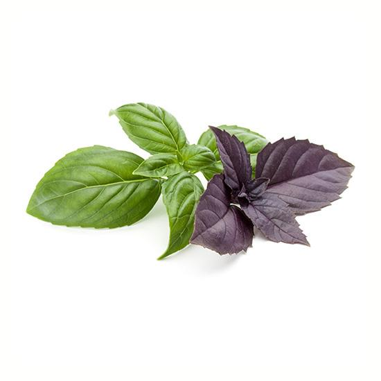
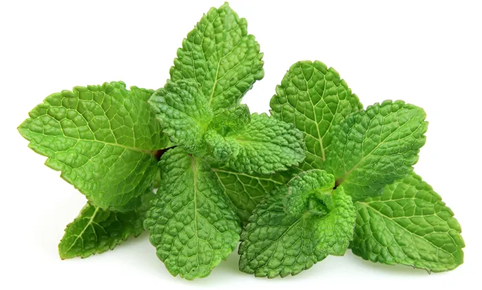
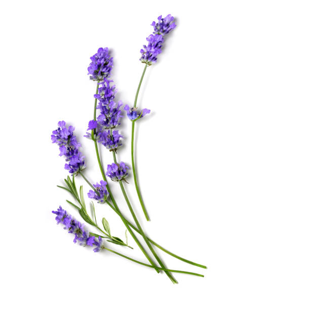
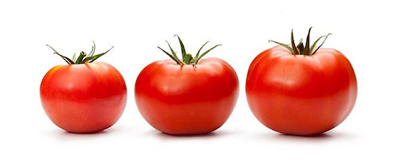
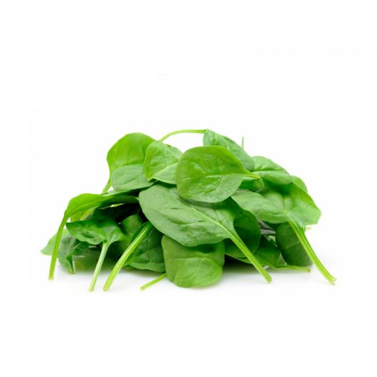
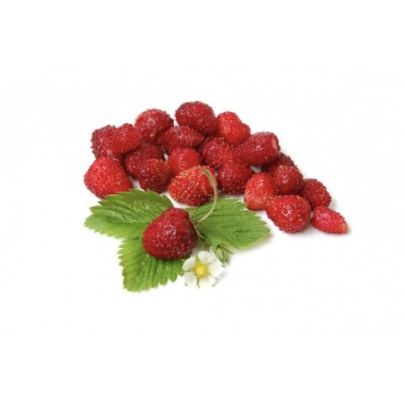
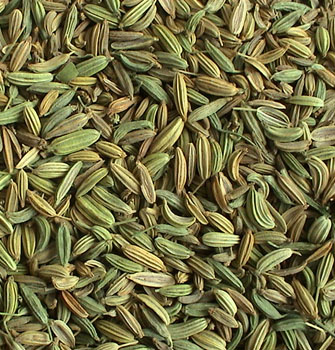

Maecenas lacinia felis nec placerat sollicitudin. Quisque placerat dolor at scelerisque imperdiet. Phasellus tristique felis dolor.
Maecenas elementum in risus sed condimentum. Duis convallis ante ac tempus maximus. Fusce malesuada sed velit ut dictum. Morbi faucibus vitae orci at euismod. Integer auctor augue in erat vehicula, quis fermentum ex finibus.
Mauris pretium elit a dui pulvinar, in ornare sapien euismod. Nullam interdum nisl ante, id feugiat quam euismod commodo. Sed ultrices lectus ut iaculis rhoncus. Aenean non dignissim justo, at fermentum turpis. Sed molestie, ligula ut molestie ultrices, tellus ligula viverra neque, malesuada consectetur diam sapien volutpat risus. Quisque eget tortor lobortis, facilisis metus eu, elementum est. Nunc sit amet erat quis ex convallis suscipit. ur ridiculus mus.
Еко рослини: користь для здоров'я та навколишнього середовища
Еко рослини — це не тільки корисний елемент для вашого раціону, але й важливі для навколишнього середовища. Вони можуть не лише забезпечити натуральними продуктами харчування, а й сприяти поліпшенню якості повітря, збереженню водних ресурсів та зниженню негативного впливу на екосистему. У цій статті ми розглянемо, що таке їстівні еко рослини, які їх переваги і як вони можуть допомогти зберігати екологічний баланс.
Що таке їстівні еко рослини?
Їстівні еко рослини — це рослини, які не тільки мають смачні та корисні плоди чи частини, що можуть бути вживані в їжу, але й вирощуються з урахуванням принципів сталого землеробства та без шкоди для екології. Вони можуть бути вирощені без використання хімічних добрив, пестицидів чи інших шкідливих речовин, що робить їх не лише безпечними для здоров'я, але й корисними для навколишнього середовища.
Переваги їстівних еко рослин
- Очищення повітря: Як і інші еко рослини, їстівні варіанти можуть допомогти очищати повітря, поглинаючи токсини та виділяючи кисень. Наприклад, базилік, м'ята та лаванда можуть служити не тільки як приправи, але й сприяти очищенню повітря в домі.
- Покращення здоров'я: Їстівні рослини, вирощені органічним способом, мають більше поживних речовин, таких як вітаміни, мінерали та антиоксиданти. Вони сприяють зміцненню імунної системи, покращенню травлення та зниженню ризику хронічних захворювань.
- Збереження води: Деякі їстівні рослини, як кактуси чи сукуленти, потребують мінімум води, що дозволяє заощаджувати цей важливий природний ресурс. Вони підходять для вирощування в посушливих регіонах або в умовах, де важко забезпечити регулярний полив.
- Зниження вуглецевого сліду: Вирощування їстівних рослин на власних ділянках або навіть на підвіконнях допомагає зменшити потребу в транспортуванні продуктів, що призводить до скорочення викидів вуглекислого газу.
- Підтримка біорізноманіття: Вирощування різноманітних видів їстівних рослин сприяє підтримці здорової екосистеми, залучаючи корисних комах, таких як бджоли та метелики, які запилюють рослини.
Популярні їстівні еко рослини
-
Базилік — ця ароматна трава не тільки чудово смакує в різних
стравах, але
й має антисептичні властивості. Вирощений органічним способом, він може
бути чудовим очищувачем повітря.
 -
М'ята — ще одна популярна трава, яка має заспокійливі
властивості і
корисна для травлення. Вона також може допомогти знизити рівень стресу та
тривожності.
 -
Лаванда — окрім своєї приємної ароматики, лаванда є їстівною
рослиною, яку
можна використовувати в кулінарії та навіть для приготування напоїв.
Вона
також має заспокійливий ефект.
 -
Томати — вирощування органічних томатів забезпечує вас
смачними та
корисними плодами без хімічних добавок. Вони можуть бути вирощені
навіть в
умовах обмеженого простору, наприклад, на балконі чи підвіконні
 -
Шпинат — цей швидкозростаючий листовий овоч є джерелом
багатьох вітамінів
і мінералів. Він добре росте в помірному кліматі і не вимагає великої
кількості води.
 -
Суниця — одна з найбільш популярних ягід, яка містить велику
кількість
вітаміну C. Вона також допомагає підтримувати здоров'я шкіри та покращує
імунну систему.
 -
Фенхель — ця рослина має не тільки смачні насіння, які
використовуються в
кулінарії, а й листя, яке містить корисні властивості для травної
системи.

Висновок:
Їстівні еко рослини — це чудовий спосіб не лише забезпечити себе натуральними та корисними продуктами, але й зберегти екологічний баланс навколишнього середовища. Вирощування таких рослин дозволяє зменшити вплив на природу, зберігати водні ресурси, покращувати якість повітря та підтримувати здоров’я. Вибір таких рослин для садівництва або навіть для вирощування вдома стане корисним внеском у створення більш сталого та здорового способу життя.